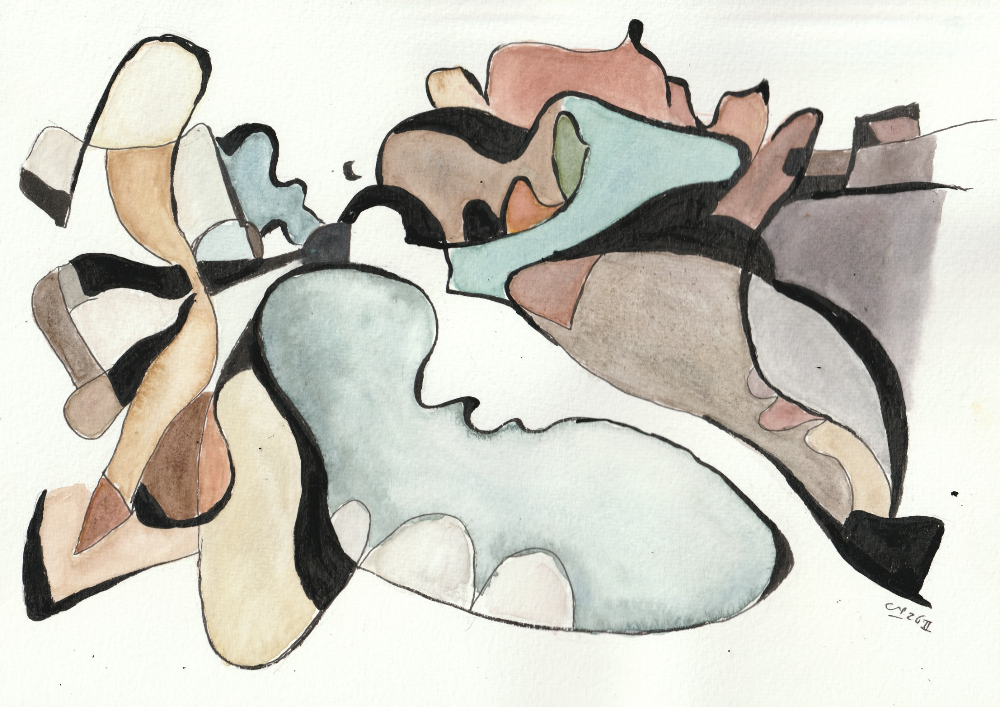

01
Première exposition personnelle
Phanogrammes
20 — 22 novembre 2026
Atelier SidebySide
5 rue La Vieuville, Paris 18e
Vernissage · vendredi 20 novembre à partir de 18 h
Samedi 21 et dimanche 22 · 11 h – 20 h

Manifeste
Par la présente exposition David Erlich exhume les Phanogrammes, par le truchement d’un procédé dont il n’a pas la maîtrise complète.
Selon l’hypothèse généralement admise, ces derniers sont les traces d’une dimension cachée sous la réalité physique dont ils épousent partiellement les contours. Les habitants de cette dimension plastique jouissent d’une certaine liberté, mais sont souvent prisonniers de lignes d’encre.
Le procédé utilise des photographies prises par l’auteur, sélectionnées pour leur potentiel phanographique. Chaque tirage est unique : la temporalité du sujet ne coïncide pas nécessairement avec celle de sa révélation. Il ne faut donc pas s’inquiéter de trouver plusieurs versions de phanogrammes pour une même réalité.
Certaines études (minoritaires) indiquent que le phanotope (la dimension des phanogrammes) pourrait avoir été créé 380 000 ans après le Big Bang lorsque la lumière se découpla de la matière. Cette dimension subtile pourrait expliquer les divergences de mesure de la constante de Hubble.
Nous précisons que l’auteur n’a pas l’ambition de contribuer à la résolution de cette controverse.
02
Cascade, Saint-Gervais-les-Bains
03
Esztergom, Hongrie
04
Travaux sur le canal Saint-Martin, Paris
05
Bac Ha, Vietnam
06
Rue de Lancry en hiver, Paris
07
Antoine rapporté à Cléopâtre, Eugène-Ernest Hillemacher, musée de Grenoble
08
Quai de Jemmapes au printemps, Paris
09
Rochers de Chausey
10